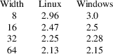

srec_mem - Lattice Memory Initialization format
A Lattice Memory Initialization format (.mem), by Lattice Semiconductor, file is an ASCII text file that consists of a header followed by lines of memory data.
Syntax
The data must be in one of the following formats: Bin
(binary), Hex (hexadecimal), or Address-Hex (described
below).
For hexadecimal values, both upper and lower case can be used. If the data has fewer bits than the specified data width, the most significant bits are filled with 0. Any address not specified will be filled with 0.
Comments can be added at any point after the header (defined below) by starting the comment with a pound sign (#) or two slashes (//). The comment then includes everything to the end of the line. Comments may be added to any of the data, but never add comments to the header.
Header
A .mem file starts with a header, which declares the file
format, memory size, and address and data display radix for
Memory Generator. The syntax of the header is:
#Format=Bin | Hex | AddrHex
#Depth=1 to 65536
#Width=1 to 256
#AddrRadix=index-number
#DataRadix=index-number
#Data
The index-number can be one of the following numbers. AddrRadix and DataRadix can have different values.
Binary: 0
Octal: 1
Decimal: 2
Hexadecimal: 3
For example, the following header says the .mem file is using the binary format for a 32x8 memory. When displayed in Memory Generator, the address will be shown in hexadecimal and the data will be shown in binary.
#Format=Bin
#Depth=32
#Width=8
#AddrRadix=3
#DataRadix=0
#Data
Bin and Hex
Formats
The data is represented in binary or hexadecimal format.
Each line of data specifies the contents for one memory
location, starting with address 0. That is, the first line
is for address 0, the second line is for address 1, and so
on. For each line, the data is interpreted as least
significant bit on the right.
For example, in the Bin format, the following lines will initialize address 0 to “00011011”, address 1 to “11111010” (assuming it is a 32x8 memory).
# for a 32x8 memory
11011
11111010
In the Hex format, the following lines will initialize address 0 to “003B”, address 1 to “FB0A” (assuming it is a 32x16 memory).
# for a 32x16 memory
3B
FB0A
AddrHex
The data is represented in hexadecimal format. Each line
consists of an address followed by a colon and then any
number of data words, separated by spaces:
address: data data> data...
The data will be applied starting at <address> and filling in sequentially from there.
For example:
A0:03 F3 3E 4F
B2:3B 9F
will initialize A0 with 03, A1 with F3, A2 with 3E, A3 with 4F, B2 with 3B, and B3 with 9F. The other addresses will be initialized to 0. So A4 through B1 will be set to 0.
See Also
http://help.latticesemi.com/docs/webhelp/eng/wwhelp/wwhimpl/common/html/wwhelp.htm#href=Design%20Entry/memory_initialization_file.htm#1371843&single=true
Size
Multiplier
The size multiplier depends on the width selected. As files
grow larger, their size multipliers will approach those in
the table, from above.

Byte
Order
This format is implicitly big-endian. Use a -byte-swap
filter if you need something different.
srec_mem
version 1.65
Copyright (C) 1998, 1999, 2000, 2001, 2002, 2003, 2004,
2005, 2006, 2007, 2008, 2009, 2010, 2011, 2012, 2013, 2014,
2018, 2019, 2022 Peter Miller
The srec_mem program comes with ABSOLUTELY NO WARRANTY; for details use the ’srec_mem -VERSion License’ command. This is free software and you are welcome to redistribute it under certain conditions; for details use the ’srec_mem -VERSion License’ command.